Rett i Lomma Håndverker
Brukerdokumentasjon for mobil: timer, jobber, varer, utlegg, bilder, bil-lager og fravær/flexi.
1. Start appen
Åpne linken til håndverkermodulen.
Trykk Start håndverkermdemo for å gå inn i appen.
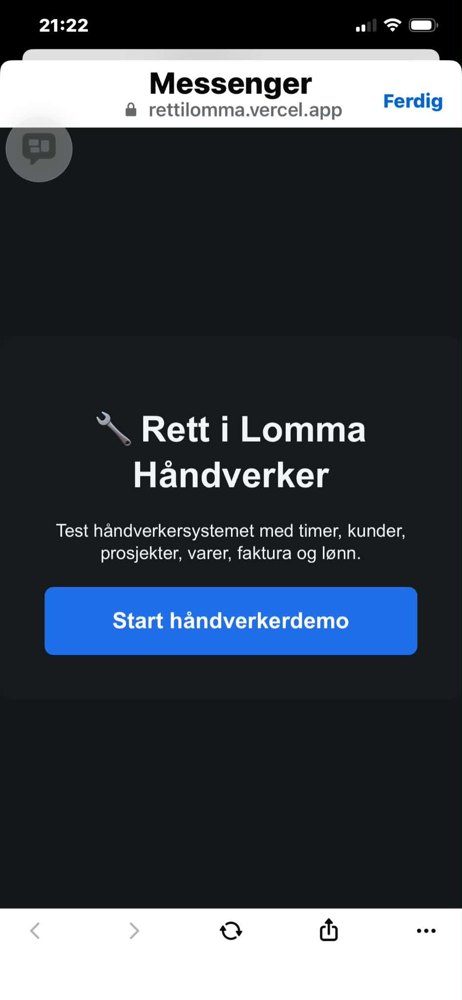
Startside for håndverkermodulen.
2. Registrer timer
Bruk Timer når du skal registrere arbeid på kunde og prosjekt.
Fyll inn dato, kunde, prosjekt, starttid, sluttid og timepris.
Velg aktiv bil dersom appen ber om det. Aktiv bil brukes for å hente varer fra bil-lageret.
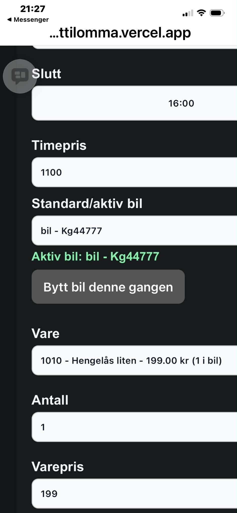
Timer med aktiv bil og varevalg.
3. Velg kunde og prosjekt
Kunde og prosjekt velges i nedtrekksfelt. På mobil åpnes listen som en vanlig mobilmeny.
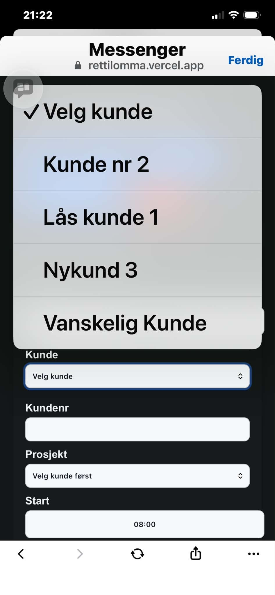
Velg kunde fra listen.
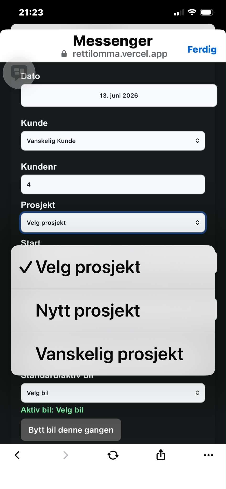
Velg prosjekt etter at kunden er valgt.
4. Velg bil og legg til varer
Varer hentes fra den aktive bilen. Dette gjør at varer som brukes ute hos kunde trekkes fra riktig bil-lager.
Velg Standard/aktiv bil.
Velg vare fra listen.
Skriv antall og trykk Legg til vare på faktura.
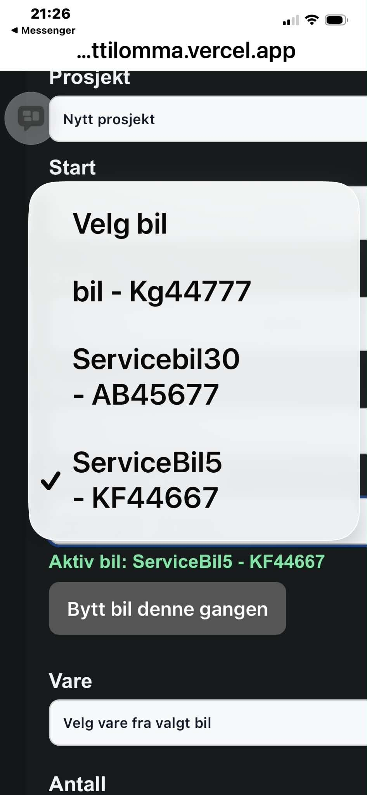
Velg eller bytt aktiv bil.
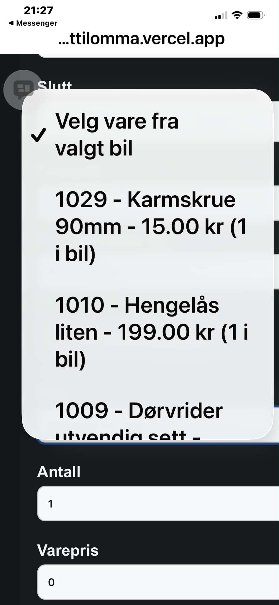
Velg vare fra valgt bil.
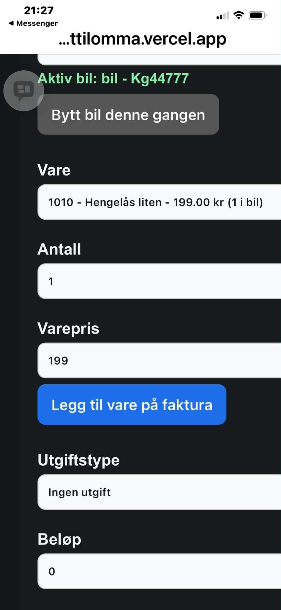
Skriv antall og legg varen på faktura.
Tips: Hvis varelisten er tom, sjekk at aktiv bil er valgt og at bilen faktisk har varer på lager.
5. Legg til utlegg
Utlegg kan legges til samme registrering som timer og varer.
Velg utgiftstype, for eksempel kjøring, bompenger, parkering, ferge eller diett.
Skriv beløp eller km/pris pr km.
Trykk Legg til utlegg på faktura.
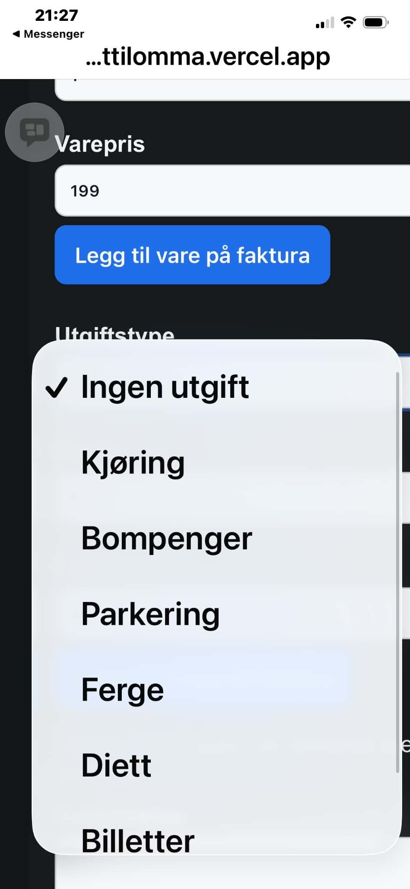
Velg type utlegg.
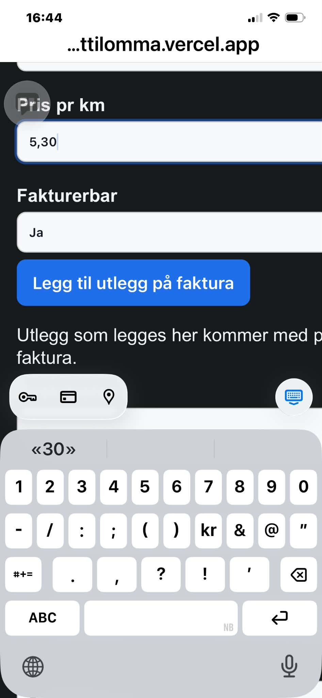
Skriv beløp på mobil.
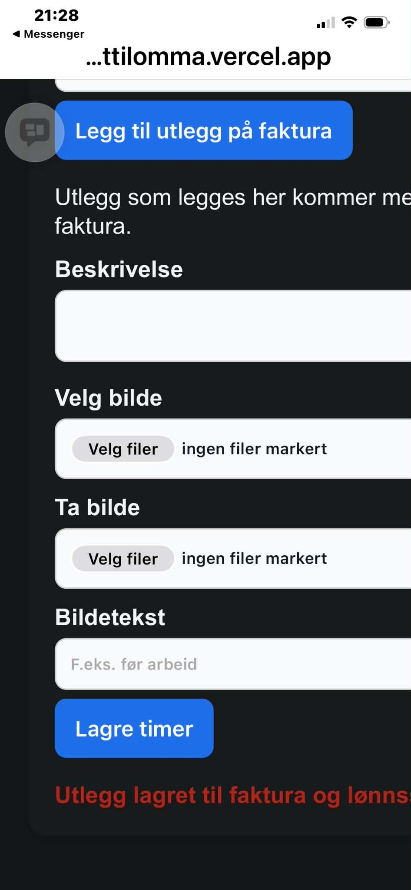
Legg til utlegg på faktura.
6. Legg til bilder
Du kan legge til bilder som dokumentasjon på jobben.
Trykk Velg fil.
Velg Ta bilde eller Bildebibliotek.
Skriv bildetekst om ønskelig og lagre.
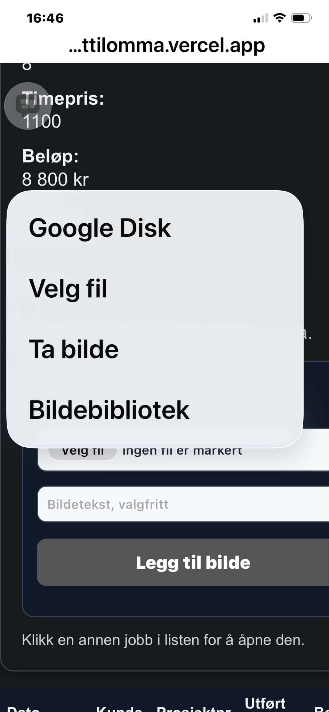
Velg bildekilde på mobil.
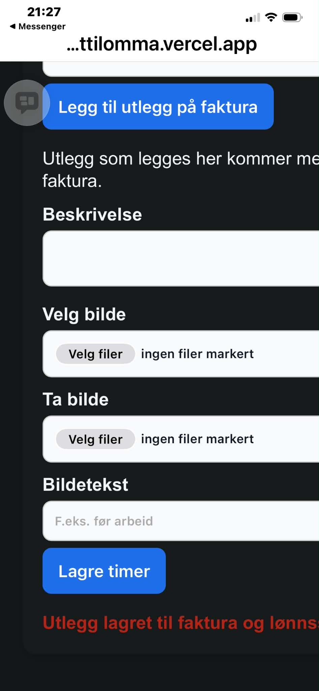
Lagre timer med bilde og bildetekst.
7. Fyll bil fra lager
Bruk Min bil / fyll lager når varer skal flyttes fra hovedlager til bilen.
Velg bilen som skal fylles.
Skriv antall på varene som skal legges i bilen.
Trykk Send PDF til lager dersom lageret skal plukke varene først.
Når varene faktisk er mottatt, trykker ansatt Lagre alle valgte varer på bilen.
Viktig: Lagerlogg og beholdning skal først oppdateres når varene lagres på bilen, ikke når PDF-en sendes.
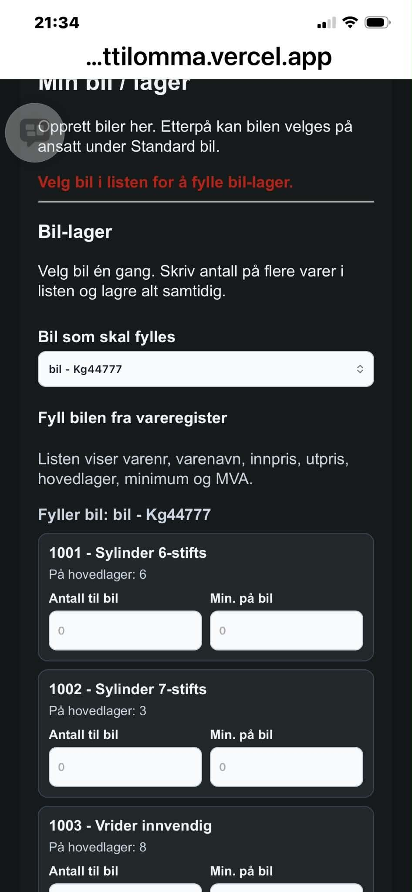
Fyll bil-listen på mobil.
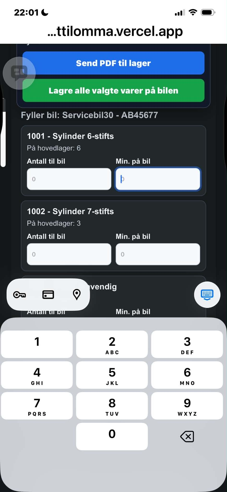
Skriv antall på varen som skal legges i bilen.
8. Fravær og flexi
Bruk Fravær / Flexi for ferie, egenmelding, permisjon og avspasering.
Velg type fravær.
Velg fra dato og til dato.
Skriv timer pr dag.
Send til godkjenning.
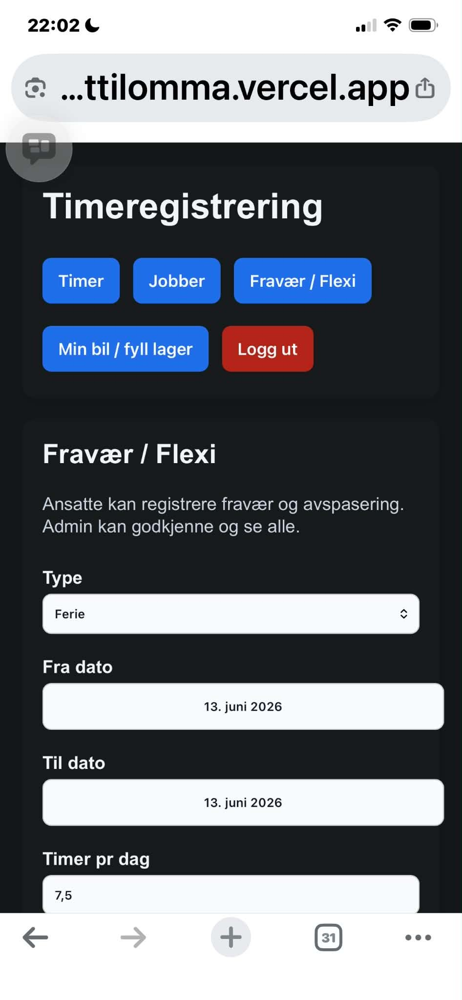
Registrering av fravær og flexi.
9. Tips ved mobilbruk
- Åpne helst appen i Safari eller Chrome, ikke inne i Messenger-nettleseren.
- Hvis gamle endringer vises, legg til
?v=20260613 på slutten av linken.
- Velg aktiv bil før du legger til varer på faktura.
- Ved fylling av bil: send PDF først hvis lageret skal plukke, og lagre først når varene er mottatt.
Dokumentasjonen er laget fra skjermbildene i opplastet zip. Bildene er gitt logiske filnavn i mappen bilder.